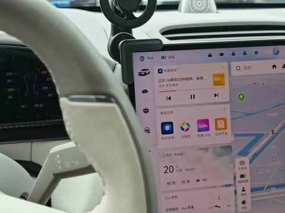
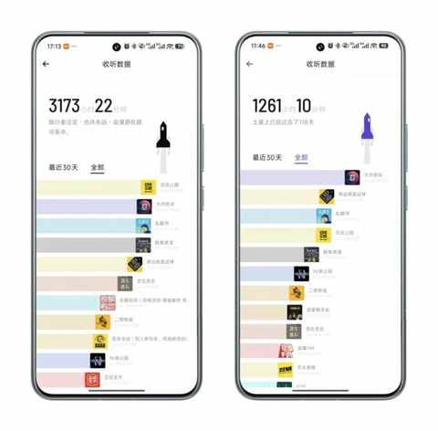
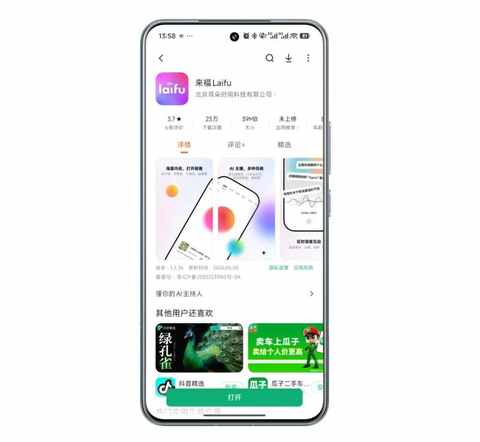
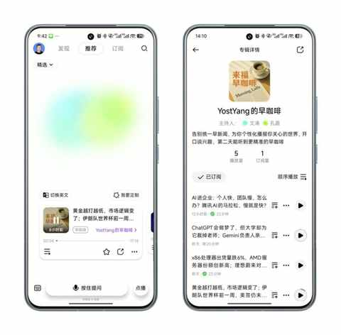
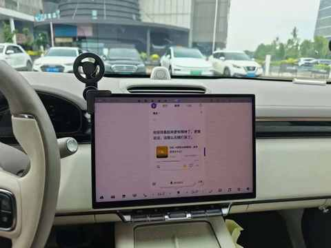
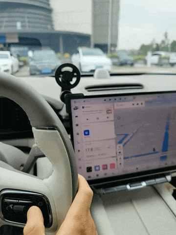
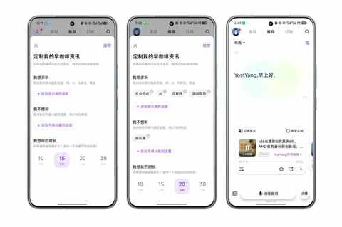
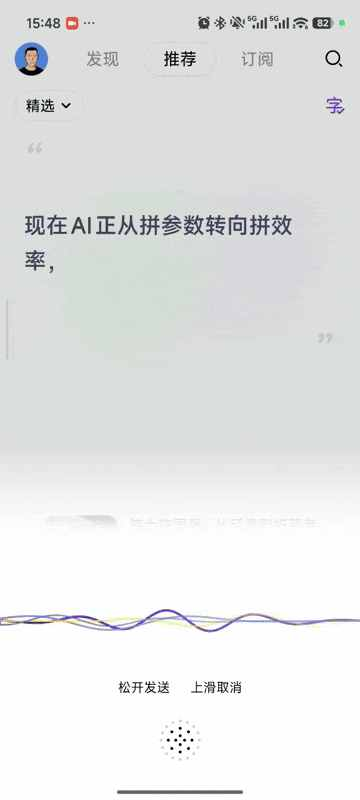
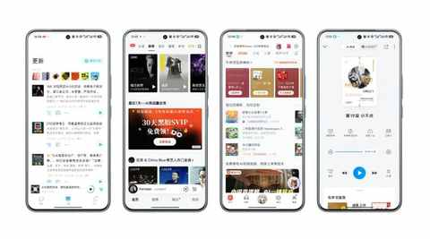

极氪7X开了 3 万公里后，我在车上试了试AI电台
引子
极氪 7X 开到 3 万公里后，我越来越明显地感觉到，车上的声音内容并不是一个小问题。
现在的新能源车，智能座舱已经越来越像一个移动空间：屏幕更大，应用更多，语音助手也越来越常见。可真正坐进驾驶座之后，我最常遇到的问题反而很简单：这一趟到底听什么？
有时候车都切到 D 档了，导航也已经开始播报，车流也开始往前挪，但我还没决定这一趟到底听什么。

刚开始开车时，我以为车上的声音内容选择很简单：想放松就听歌，想学点东西就听播客，带孩子就听儿童节目。
但开久了之后会发现，车里的声音其实很复杂。一个人开车、和家人一起、带孩子出门、长途自驾、上下班通勤，适合听的内容完全不一样。
开了 3 万公里后，车里的声音不只是音乐
一个人开车时，我听音乐和播客最多。
送娃上学回来的路上，我经常会放一点伍佰，情绪很快能被带起来。早晚高峰堵车时，我则更愿意听播客。车子在缓慢蠕行，驾驶压力没那么高，适合听一些有信息量的内容，也能缓解堵车时的无聊。
但家人或朋友在车上时，内容选择就会变得保守一些。
太长、太严肃、太吵、太私人化的内容都不合适，毕竟车厢是共享空间。
至于孩子在车上，内容选择权基本就会被改变。只要是接送孩子，我大多会播放喜马拉雅儿童频道的内容，有时候还得一起听，防止他突然和我讨论故事细节时，我答不上来。
开了 3 万公里后，我会更在意这些细节：车机里的音频应用不是越多越好。真正难的是，它能不能理解不同车内场景下，驾驶者到底需要什么样的声音内容。
播客多了，选择反而更难
我从 2020 年开始听播客，到现在大概六年了。两个小宇宙账号的累计收听时长已经超过 4400 小时。

曾经我很享受那种“打开一个节目，就能听到一场长谈”的收获感。但这两年，我越来越明显地感觉到：播客不是没内容了，而是要找到自己真正想听内容的成本变高了。
现在早已过了缺内容的阶段，真正的问题是筛选成本太高。节目越来越多，关注列表越来越长，但真正适合当下这段路程的内容，反而没那么容易选出来。
另一个问题是疲劳。
并不是说现在的播客不好。相反，很多节目制作越来越成熟，音质也比前几年好了不少。只是当你听得足够久之后，会对某些话题、表达方式和嘉宾结构产生熟悉感。
有时候，甚至能从前几句推测到主播和嘉宾后面会怎么说。
放在智能座舱里，这个问题会被进一步放大。车机屏幕可以很大，App 可以很多，但驾驶者真正需要的，往往不是更多选择，而是更少操作、更低干扰、更快开始播放。
来福电台，降低的是车内“开始听”的成本
也是在这个背景下，我开始试用来福电台。

官方给来福电台的定位是“轻量化 AI 定制音频电台”。这个说法听起来有点产品化，但放到我的使用场景里，意思其实很简单：
它不是让我继续去找内容，而是通过 AI 大模型，根据兴趣、偏好和收听时长，先帮我组织一段适合当下听的内容。
根据品牌方提供的信息，来福电台目前全渠道累计下载量已经达到数十万，次日留存超过 40%。对于一个新推出的 AI 类 App 来说，这个数据挺有参考价值。很多 AI 工具会经历“下载尝鲜，然后很快沉默”的过程，而能让用户第二天继续打开，说明它至少解决了一个真实、高频、足够痛的需求：
在不知道听什么的时候，先让声音内容开始播放起来。
对开车场景来说，这件事比听起来更重要。因为开车前最烦的不是没有内容，而是你不想多做哪怕一个额外步骤。
来福的操作逻辑更接近音乐 App：打开后就能播放，听完一段后自动衔接下一段。如果当前内容不感兴趣，也可以很快切走。
这件事放在平时可能不算什么，但放在开车场景里，减少的每一个步骤都有意义。

我把来福电台装进了极氪 7X 车机
从车主角度看，我觉得来福电台的想象空间不只在手机端。
现在很多车机里的音频内容，本质上还是把手机里的音乐、听书、播客搬到车上。这些 App 都能正常使用，但没有真正解决“我现在该听什么”的问题，而这个才是问题的核心。
虽然来福电台尚未发布正式车机版本，但我借助极氪车机中的极拓 App，已经完成了来福电台的安装。除了界面暂未针对车机做专门适配，其他功能基本都能正常使用。

打开便能播放，用方向盘上的按钮也可以完成节目的切换。

这也是我觉得它和智能座舱有关的原因：它不是单纯把一个手机 App 搬到车上，而是在尝试解决车内声音内容的入口问题。
如果 AI 能根据兴趣、时间和场景，主动组织更适合车内收听的内容，它就不只是一个音频 App，而更像智能座舱里的一个内容入口。
个性化早咖啡，适合早高峰通勤
来福里我比较感兴趣的功能，是“个性化早咖啡”。

它更像是一个专属自己的早间新闻电台。简单设置之后，它会根据你的兴趣和收听时长，把当天值得听的信息整理成音频内容。
早上开车时，我未必想听一整期长播客，也未必想打开新闻 App 一条条刷。如果有一个电台把当天值得听的信息整理好，用音频方式播放出来，就很适合早高峰通勤。
早上送娃、通勤这段时间通常不会太长，也不适合听一整期长播客。如果早咖啡能按 10、15、20、30 分钟这样的时长组织内容，它更像是把早上的碎片时间刚好填上，而不是让我为了内容重新调整时间。
AI 推荐和语音，让它更像一个私人电台
来福和传统播客不同的地方，是它有 AI 推荐、语音交互、AI 主播和点播能力。
对我这种已经听了多年播客的人来说，最需要的不是更多节目可供挑选，而是能更精准、更快速地找到我想听的内容。
如果一个电台能逐渐知道我不喜欢太吵的、不喜欢太水的、不喜欢太重复的内容，它的价值就不只是推荐，而是在帮我节省注意力。
在车上，语音交互比触控更自然，也更安全。

毕竟开车时，很多操作并不适合低头完成。如果能通过语音完成换节目、点播或简单提问，它会更接近一个“车上电台”的使用习惯。
对我来说，来福电台更像一个可以持续陪伴的声音入口，而不是一个需要主动搜索和订阅的节目库。
它适合哪些开车场景？
对我来说，来福电台最适合一个人通勤。
尤其是不知道听什么，但希望车里有一个声音陪伴的时候，它能先把内容播起来。
长途时，它适合做补充。我还是会提前准备熟悉的播客和歌单，但当一段内容结束后，来福可以用来换换脑子。
家人或朋友在车上时，我会更谨慎。因为个性化推荐更贴近我个人审美，不一定适合全车人。
孩子在车上时，我依然会优先选择明确的儿童节目。这一点我不想夸大。
它不是替代品，而是一个新的声音入口
来福电台并不会替代我常用的小宇宙、网易云音乐、喜马拉雅和微信读书。
对我来说，它更像是补上了一个新的空位：当我一个人开车、不知道听什么、又不想再花时间挑内容时，它可以先给我一个轻量、个性化、打开就能听的选择。
目前来福电台的功能和内容都是免费的，也没有广告插入。音频产品一旦在开车时突然插入广告，体验很容易被打断。尤其是在通勤和长途场景里，纯净一点的播放体验，比想象中更重要。

极氪 7X 开到 3 万公里后，我依然会遇到这个小问题：开车时不知道听什么。
至少在我这次体验里，来福电台提供了一个方向：不是继续堆更多 App、更多内容，而是用 AI 把内容组织好，让驾驶者更快开始听。对我来说，它不是替代播客，而是在极氪 7X 的车内补上了一个新的声音入口。
有时候，能打开就听，也是一种很适合车里的声音体验。